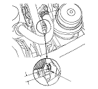

Drive Belt Inspection
Inspect the belt for cracks and damage. If the belt is cracked or damaged, replace it.
Check that the auto-tensioner indicator (A) is within the standard range (B) as shown. If it is out of the standard range,
replace the drive belt.
